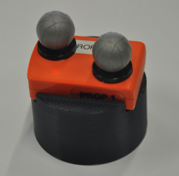

Where will the cylinder go?
A person sees one of nine destinations and moves a cylinder toward it. Give a model the destination and the first 200 milliseconds of optical measurements. Change the destination and see where the same start takes it.

Optical object coordinates
Recorded start and forecast
One recording
Read an endpoint
Each value is a change in position from the last input sample, in metres along the original camera axes. The forecast and the measurement meet only if all three coordinates agree.
| Endpoint | X (m) | Y (m) | Z (m) | 3D error (m) |
|---|
See the five input positions
Absolute position in the source camera frame, in metres. Each input is at or before its nominal time. A missing measurement can move the last input back by up to one 4 ms frame.
| Time (s) | X (m) | Y (m) | Z (m) |
|---|
Across held-out people
How far did each forecast miss?
| Method | Mean 3D error (m) | 95% interval (m) |
|---|
Compare the fitted Transformer with each alternative
Subtract each alternative’s error from the motion-and-target Transformer’s error for the same person, then average across people. A negative difference favours the full Transformer. An interval spanning zero leaves the direction uncertain.
| Alternative | Difference (m) | Paired 95% interval (m) |
|---|
Coverage, baselines and uncertainty
Each person counts equally. The Transformer scores average the three fits’ errors. For the wrong-target test, the full model tries all eight other targets and the analysis averages their individual errors. The training mean averages each development person’s displacement for the selected hand and target. Intervals resample held-out people 10,000 times.
What the cameras saw
Reflective markers sat on a cylinder. The cameras sampled at 250 Hz while people moved the cylinder with one hand. Each trial follows the mean position of the markers visible at its first usable frame, as long as those same markers remain available. A wrist joint can move differently from the object it carries.
Targets ran from 1 on the participant’s left to 9 on their right along a semicircle of radius 0.25 m. Left and right hands performed separate trials. This recording does not place the go sound or the target display on the optical clock. A camera coordinate alone does not identify a person’s left, right or up.
Follow the measurement
Tim Sziburis, Susanne Blex, Tobias Glasmachers and Ioannis Iossifidis released the measurements in 2025 under CC BY 4.0. This reader selects and averages optical marker positions, samples five time points and fits forecasts on development participants.